Los KARAOKES son módulos, que forman parte de un libro educativo interactivo, en el que una canción se acompaña de texto e imágenes sincronizadas. Por tanto, tienen tres componentes:
El objetivo de este manual es describir el proceso mediante el cual se toman los tres elementos (canción, letra e imágenes) y se sincronizan y se preparan para que estén disponibles en el libro interactivo final.
Para ello, vamos a utilizar dos aplicaciones:
Y el fichero .json del KARAOKE que se edita mediante un programa editor de código (por ejemplo Brackets).
Es un proceso manual que se basa principalmente en el oído musical de la persona. El tempo de la música y los ritmos de la canción son los que dan las pautas para la correcta sincronización de los KARAOKES. Todo ello ha de depurarse hasta quedar correcto. Esto quiere decir que, comenzaremos con la primera sincronización del texto, pasaremos a la sincronización de las imágenes y probablemente tengamos que retocar ambos después para que el resultado sea satisfactorio (posiblemente varias veces).
Vamos a comprobar que tenemos todos los archivos necesarios para trabajar. En el repositorio del karaoke tiene que haber dos carpetas y un archivo .json.
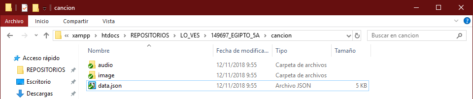En el caso de no existir estas carpetas hay que crearlas y el archivo .json se puede copiar y pegar de otra canción anterior para modificarlo. Todos son iguales, sólo cambian los tiempos de sincronización de imagen y audio dependiendo de la canción.
En la carpeta de audio se copia la canción (archivo proporcionado por la editorial) en formato .mp3 y .ogg. El nombre tiene que ser "cancion" (sin acento). Quedaría así:
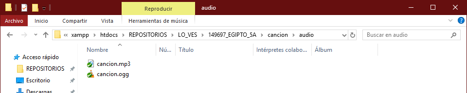En la carpeta image tienen que estar las imágenes previamente preparadas (proporcionadas originalmente por la Editorial) pero redimensionadas a 700x500 pixeles y resolución de 72ppp. Se nombran como cancion00.jpg, cancion01.jpg, cancion02.jpg,… etc.
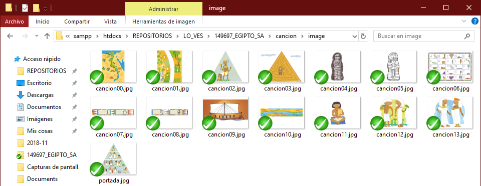Finalmente está el fichero .json que para editarlo se abre con la aplicación Brackets.
En este apartado vamos a sincronizar la letra de la canción (el texto en un archivo .txt o Word) a la canción en si (fichero .mp3) que en ambos casos nos facilita la Editorial.
La herramienta para realizar esta operación es Enhanced LRC Maker. Se utiliza en un navegador de internet. Las capturas de pantalla que vamos a incluir son de la aplicación Firefox, pueden variar algo en otros navegadores pero son básicamente iguales.
Cuando se abre la aplicación en el navegador vemos lo siguiente:
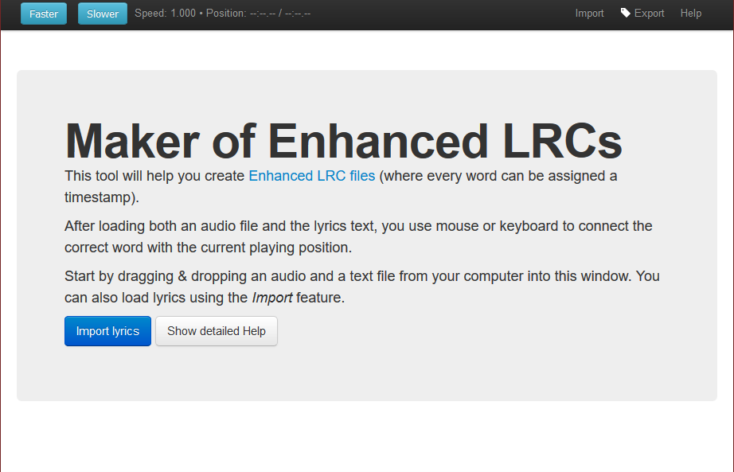En general su funcionamiento consiste en que se carga en la aplicación un archivo de texto con la letra y un archivo de audio con la canción. Mientras se reproduce el archivo de audio se asigna cada palabra con la posición temporal de reproducción.
Esto se puede realizar mediante el uso del teclado o del ratón, lo que hace avanzar un cursor a lo largo del texto.
Las palabras que vayan teniendo asignados sus tiempos pasan a tener color verde.
El archivo de audio simplemente hay que arrastrarlo a la pantalla de la aplicación y queda cargado. Se puede apreciar que esto ha sucedido porque aparecen el tiempo de duración de la misma, un control de reproducción/volumen y una barra de progreso en la parte superior de la pantalla.
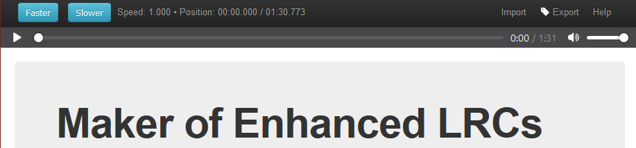Antes de cargar el archivo de texto hay que prepararlo. Tenemos que definir las “frases-estrofas” de la canción. En la aplicación todo el texto se ve en un párrafo, y no vamos a poder diferenciar las frases para luego poder separarlas. Esto se hace poniendo un punto al final de cada frase.
El texto de la canción de ejemplo que vamos a seguir en este manual es:
| Texto original de la canción | Texto preparado con puntos |
|---|---|
|
EN MEDIO DEL DESIERTO HABÍA UN BELLO JARDÍN DONDE VIVÍA UN PUEBLO MUY RICO Y FELIZ. A ORILLAS DEL RÍO NILO NACIÓ UN FARAÓN, QUE DIBUJÓ EN UN PAPIRO UNA PIRÁMIDE Y UN SOL. ¡EGIPTO! ¡EGIPTO! ¡MOMIAS! ¡COCODRILOS! ¡EGIPTO! ¡EGIPTO! ¡SARCÓFAGOS! ¡JEROGLÍFICOS! HACE AÑOS INVENTARON LOS NÚMEROS Y EL ARADO, EL BARCO DE VELA Y TAMBIÉN EL CALENDARIO. ¡EGIPTO! ¡EGIPTO! ¡MOMIAS! ¡COCODRILOS! ¡EGIPTO! ¡EGIPTO! ¡SARCÓFAGOS! ¡JEROGLÍFICOS! ¡EGIPTO! ¡EGIPTO! ¡MOMIAS! ¡COCODRILOS! ¡EGIPTO! ¡EGIPTO! ¡SARCÓFAGOS! ¡JEROGLÍFICOS! |
EN MEDIO DEL DESIERTO. HABÍA UN BELLO JARDÍN. DONDE VIVÍA UN PUEBLO. MUY RICO Y FELIZ. A ORILLAS DEL RÍO NILO. NACIÓ UN FARAÓN,. QUE DIBUJÓ EN UN PAPIRO. UNA PIRÁMIDE Y UN SOL. ¡EGIPTO! ¡EGIPTO!. ¡MOMIAS! ¡COCODRILOS!. ¡EGIPTO! ¡EGIPTO!. ¡SARCÓFAGOS! ¡JEROGLÍFICOS!. HACE AÑOS INVENTARON. LOS NÚMEROS Y EL ARADO,. EL BARCO DE VELA. Y TAMBIÉN EL CALENDARIO. ¡EGIPTO! ¡EGIPTO!. ¡MOMIAS! ¡COCODRILOS!. ¡EGIPTO! ¡EGIPTO!. ¡SARCÓFAGOS! ¡JEROGLÍFICOS!. ¡EGIPTO! ¡EGIPTO!. ¡MOMIAS! ¡COCODRILOS!. ¡EGIPTO! ¡EGIPTO!. ¡SARCÓFAGOS! ¡JEROGLÍFICOS!. |
En todas las frases que no acaban con un punto “.” hemos añadido uno (en las que ya lo tienen no es necesario). Al final del proceso hay que quitarlos para que no aparezcan, son sólo marcas para orientarnos durante la sincronización.
Cuando ya está preparado se pulsa el botón Import
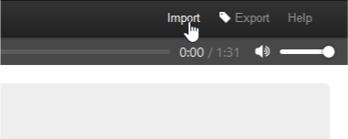Y se pega en la ventana de introducción de texto que aparece
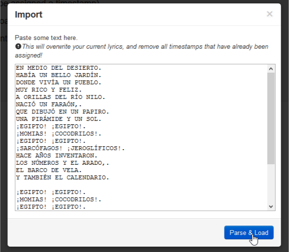Finalmente se pulsa el botón Parse & Load y ya tendríamos la aplicación preparada para iniciar la sincronización.
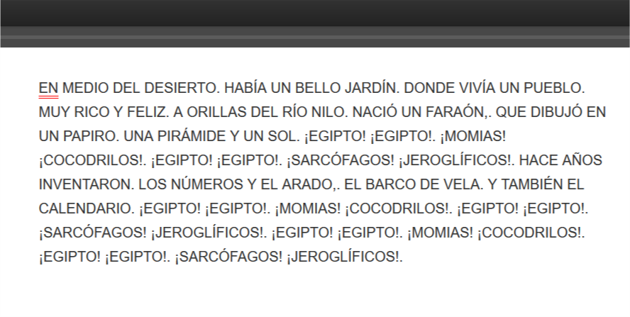Las dos líneas rojas debajo de la primera palabra son el cursor que indica cual es la palabra que vamos a definir el tiempo.
Lo controles posibles dentro de una canción son:
En cuanto pulsamos el botón de reproducción o la barra espaciadora en el teclado, comienza a reproducirse la canción.
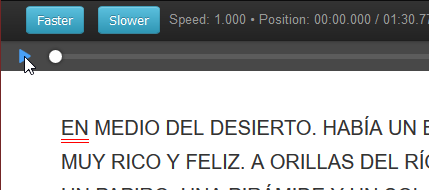Tenemos que escuchar atentamente y en cada principio de palabra hay que pulsar la barra espaciadora del teclado. Excepto en las palabras que llevan punto, en estas palabras para marcar el fin de frase hay que pulsar la tecla de la letra “E” cuando comienzan.
En el caso de haber un interludio musical amplio, mayor del habitual entre punto de frase e inicio de la frase posterior, después de pulsar la tecla de la letra “E” marcando el inicio de la última palabra de la frase, tenemos que pulsar la tecla de la letra “I” marcando el final de dicha palabra. De este modo en el resultado final tendremos la sincronización correcta.
Es importante señalar que, para una buena sincronización, la frase “justo cuando comienza” es literal. Tenemos que prever el inicio de cada palabra para pulsar la tecla correspondiente justo en ese punto.
El proceso es probable que haya de repetirse varias veces hasta obtener el resultado que consideremos óptimo. Es normal cometer errores al pulsar teclas equivocadas o no pulsarlas cuando hay que hacerlo. Si esto sucede lo mejor es cerrar la página y volver a entrar para evitar que, al quedar algo en el cache del navegador, no tome los tiempos correctos. Se tiene que hacer el proceso completo (la canción entera) de una sola vez.
Cuando ya tenemos un resultado que consideramos satisfactorio. Pulsamos el botón Export
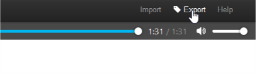Y aparece la ventana de exportación
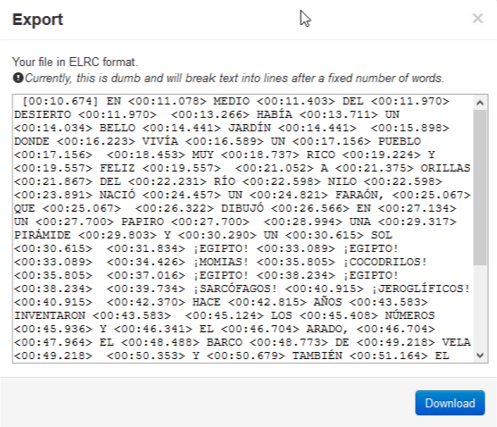Copiamos todo el texto para pegarlo en la aplicación que lo transforma (LRC to JQuery converter), porque directamente no nos sirve para aplicarlo en el fichero .json por su formato. Pero debemos guardarlo, porque de cara a la sincronización de imágenes posterior puede sernos de utilidad. Los tiempos están en absoluto, es decir, nos indican cuando aparece cada palabra desde el segundo 00:00 de inicio de la canción.
Lo primero es pegar el texto copiado de la aplicación Enhanced LRC Maker en la ventana de introducción de texto (superior) de la aplicación LRC to JQuery converter.
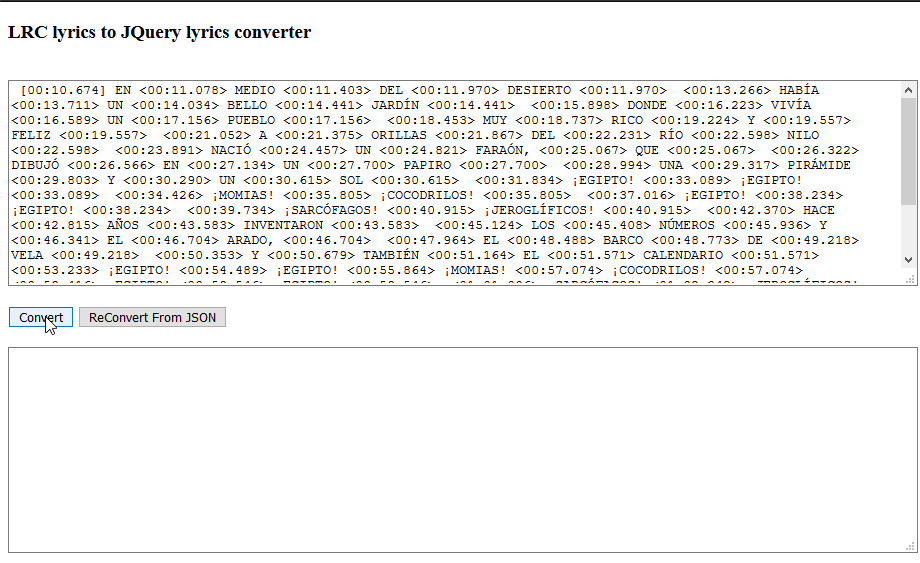Pulsamos “Convert”
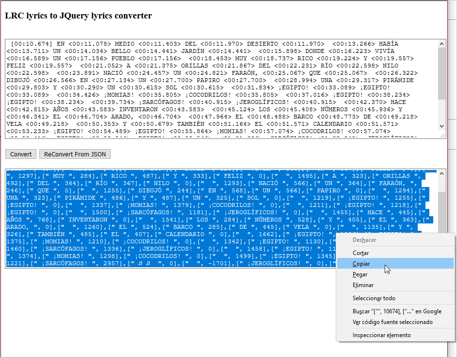Y copiamos de la parte inferior el resultado de la conversión.
Este texto, que contiene ya la sincronización que acepta el archivo .json puede ser ya pegada directamente en el mismo (en el editor de código).
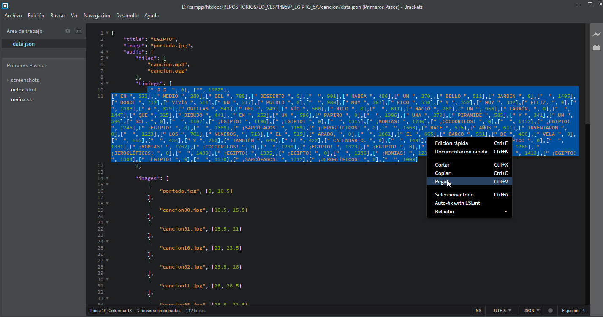Esta es la zona donde se pone la sincronización de texto de la canción (que ya hemos realizado) va en la etiqueta “timings”
La sincronización de las imágenes va en la etiqueta “images” justo debajo de la anterior.
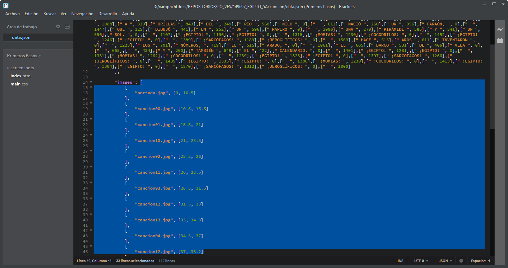La sincronización de imágenes se realiza en base al archivo original de Word proporcionado por la Editorial. En el archivo vienen definidas las imágenes que se corresponden con las frases de la canción. Esto sería el ejemplo de las dos primeras frases:
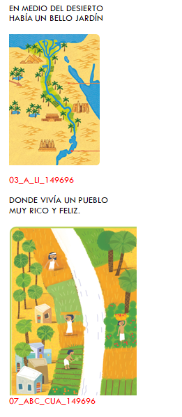Anteriormente guardamos el texto que nos da la aplicación Enhanced LRC Maker en su ventana de exportación. Es ahora cuando vamos a necesitarlo. Con los tiempos del inicio de palabra en la zona del .json de “images” vamos poniendo los tiempos. Tenemos que usar los inicios de palabra de los inicios de frases. En el ejemplo “EN” (de “EN MEDIO DEL DESIERTO”) y “DONDE” (de “DONDE VIVÍA UN PUEBLO”) que se corresponderían con cancion00.jpg y cancion01.jpg. La portada por defecto se pone desde 0 hasta cuando comienza la primera imagen.
"images": [
[
"portada.jpg", [0, 10.5]
],
[
"cancion00.jpg", [10.5, 15.5]
],
[
"cancion01.jpg", [15.5, 21]
],
El primer tiempo es cuando aparece la imagen y el segundo cuando desaparece (que siempre coincide con el de inicio de la imagen posterior).
Una vez puestos todos los tiempos de todas las imágenes lo que queda es visualizar completamente el KARAOKE y aplicar los pequeños ajustes necesarios para que todo quede perfecto. Normalmente las unidades de tiempo se ajustan con + - 0.5 seg., pero a veces es necesario aplicar cambios de una o dos fracciones de segundo arriba/abajo para que coincidan con la música.
El final del proceso es repasar la puntuación de toda la canción en la zona timings del archivo .json (recordemos que antes la alteramos para poder separar las frases-estrofa de la canción).